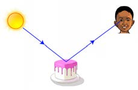
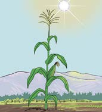

2.Observe how the pencil appears.
3.Pour water from the jug into the bowl or beaker until it reaches half full, as shown in Figure 12.
4.
Observe again the appearance of the pencil in the bowl or beaker after adding the water.What differences do you notice in the appearance of the pencil before and after adding the water?
Results
The pencil appeared to be bent at the water surface due to the refraction of light.
Conclusion
This experiment shows that light rays bend when they move from one transparent medium to another.
Uses of light energy
Light energy can be used for various purposes as shown in Table 4.
Table 4: Uses of light energy
| Picture | Explanation |
|---|---|
 | Vision: Light helps us see things.Without light, we would not be able to see colours, shapes or objects around us. |
 | Photosynthesis: Plants use light energy from the sun to make their food. |